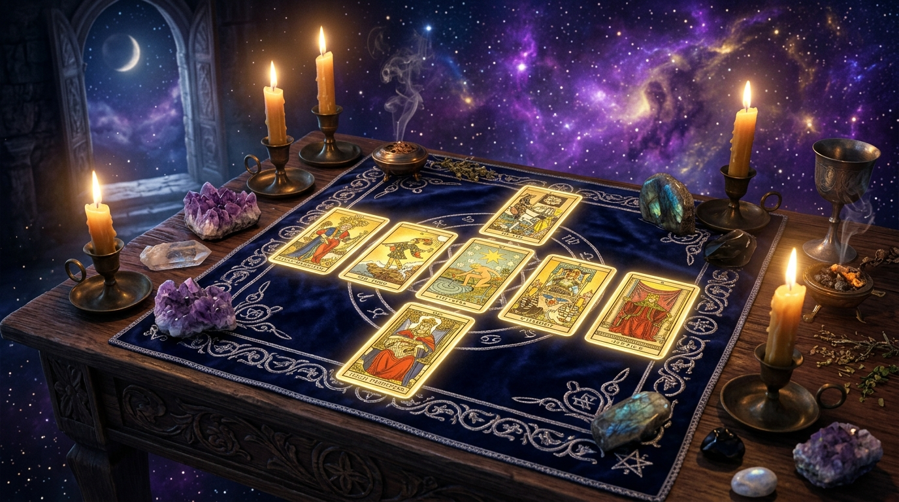

La Tirada de la Cruz Celta es, sin lugar a dudas, el método de lectura más icónico, reverenciado y completo de toda la cartomancia occidental. Popularizada a principios del siglo XX por el místico Arthur Edward Waite (creador de la baraja Rider-Waite-Smith y miembro de la Orden Hermética de la Golden Dawn), esta disposición de diez cartas ofrece una radiografía multidimensional de cualquier consulta, abarcando desde las causas inconscientes más remotas hasta las influencias ambientales y el desenlace final.

A diferencia de las tiradas simples de tres cartas, que aportan una respuesta rápida y concisa, la Cruz Celta está diseñada para desentrañar situaciones complejas donde existen múltiples factores en juego: dudas existenciales, encrucijadas laborales, crisis afectivas profundas o procesos de transformación espiritual. En esta guía maestra aprenderás la arquitectura sagrada de sus 10 posiciones, el arte de interpretar los cruces de fuerza y cómo realizar una lectura fluida sin bloquear tu intuición.
1. La Estructura Geométrica de la Cruz Celta
La disposición de la Cruz Celta se divide en dos secciones maestras que dialogan constantemente entre sí:
- La Cruz Solar o Cruz Central (Posiciones 1 a 6): Representa el corazón de la situación presente, el cruce energético de fuerzas, las raíces profundas en el subconsciente y el horizonte temporal inmediato (pasado reciente y futuro próximo).
- El Báculo o Columna Vertical (Posiciones 7 a 10): Ubicada a la derecha de la cruz, actúa como una escalera evolutiva que va desde la psicología interna del consultante hasta el desenlace manifiesto en el plano físico.
2. Significado Detallado de las 10 Posiciones
| POSICIÓN | NOMBRE SAGRADO | QUÉ REVELA LA CARTA |
|---|---|---|
| Carta 1 | El Presente / El Consultante | Ubicada en el centro exacto. La energía dominante, el estado emocional del consultante y el tema principal que rodea la pregunta. |
| Carta 2 | El Desafío / El Obstáculo | Cruza horizontalmente a la Carta 1. La fuerza que se opone o complementa la situación actual; la prueba que debe trascenderse. |
| Carta 3 | La Raíz / El Inconsciente | Ubicada debajo del centro. Los motivos ocultos, patrones infantiles, memorias kármicas o la causa fundacional del problema. |
| Carta 4 | El Pasado Reciente | Ubicada a la izquierda del centro. Acontecimientos que acaban de concluir pero cuya onda expansiva sigue afectando al momento presente. |
| Carta 5 | La Corona / Lo Posible | Ubicada arriba del centro. La aspiración consciente, el mejor resultado alcanzable o la meta que la mente del consultante proyecta hacia el futuro. |
| Carta 6 | El Futuro Próximo | Ubicada a la derecha del centro. El siguiente paso inminente en las próximas 2 a 6 semanas si se mantiene la trayectoria actual. |
| Carta 7 | Tu Actitud / El Yo Interno | Base de la columna vertical. Cómo se posiciona el consultante ante la situación: sus recursos personales, bloqueos psicológicos o autoimagen. |
| Carta 8 | El Entorno y los Otros | Segunda de la columna. El ambiente externo, la opinión de familiares, socios, amigos o la energía del lugar de trabajo. |
| Carta 9 | Esperanzas y Temores | Tercera de la columna. Lo que el corazón desea secretamente o el miedo oculto que sabotea el éxito antes de intentar la meta. |
| Carta 10 | El Desenlace / Síntesis | Cima de la columna. El resultado final a largo plazo, la consolidación del ciclo y la lección kármica que el alma debe asimilar. |
3. El Secreto de la Interpretación Dinámica: Los 5 Ejes de Diálogo
Uno de los errores más habituales al leer la Cruz Celta es tratar cada carta como una isla aislada. El verdadero poder de esta tirada surge al observar cómo dialogan entre sí las posiciones emparejadas:
- Eje de Tensión Central (Cartas 1 y 2): Define el conflicto nuclear. Si en la posición 1 aparece El Loco y en la 2 El Emperador, el deseo de libertad y cambio choca frontalmente contra estructuras rígidas o figuras de autoridad.
- Eje de la Conciencia (Cartas 3 y 5): Compara lo que el subconsciente arrastra (raíz) con lo que la mente desea alcanzar (corona). Si hay contradicción, el consultante está sufriendo autosabotaje.
- Eje Temporal Horizontal (Cartas 4 y 6): Muestra la transición fluida de lo que se despide y lo que entra inmediatamente.
- Eje del Espejo Social (Cartas 7 y 8): Analiza si la percepción que el consultante tiene de sí mismo coincide o choca con lo que su entorno realmente proyecta sobre él.
- Eje de la Manifestación Final (Cartas 9 y 10): Muestra si el desenlace responde a los miedos o a las esperanzas del consultante, confirmando que la mente crea la realidad física.
✦ Consejo de Maestría: Si la Carta 10 resulta enigmática o deja dudas abiertas, puedes extraer una carta adicional de aclaración colocándola justo encima de la décima posición para arrojar luz sobre el consejo de los arcanos.
4. Ejemplo Práctico de Lectura: Encrucijada Profesional
Imaginemos una consulta donde el consultante pregunta si debe renunciar a un trabajo corporativo seguro para emprender su propio proyecto holístico:
- Centro (Ocho de Oros): Rutina diaria de trabajo arduo y perfeccionismo técnico.
- Cruce (La Torre): Miedo a la pérdida súbita de ingresos y ruptura de la comodidad económica.
- Raíz (El Juicio): Un llamado vocacional y espiritual que ya no puede seguir siendo postergado.
- Pasado (Cuatro de Espadas): Meses de agotamiento mental y necesidad de descanso reparador.
- Corona (La Estrella): La esperanza de un proyecto alineado con la misión del alma y la luz propia.
- Futuro Próximo (As de Bastos): Llegará una oportunidad emocionante o propuesta inicial en las próximas semanas.
- Actitud Interna (El Ermitaño): Prudencia, introspección y búsqueda de sabiduría antes de actuar.
- Entorno (Tres de Copas): Amigos y círculos cercanos dispuestos a apoyar y celebrar el nuevo camino.
- Miedos (Nueve de Espadas): Noches de insomnio por pensar en los peores escenarios económicos imaginarios.
- Desenlace (El Mundo): Éxito rotundo, culminación triunfal y realización plena en el nuevo proyecto a largo plazo.
Síntesis del Consejo: El mazo indica claramente que, aunque La Torre (el miedo al cambio) genera ansiedad mental (Nueve de Espadas), la raíz es un despertar genuino (El Juicio) y el desenlace final es el éxito total (El Mundo). El As de Bastos confirma que es hora de dar el paso con valentía.
Conclusión: El Templo de la Sabiduría en tu Tapete
La Cruz Celta no es solo una técnica de adivinación; es un mapa iniciático que te permite elevar la perspectiva sobre cualquier encrucijada de tu vida. Al practicarla con respeto y calma, tus lecturas ganarán una precisión, profundidad y elocuencia sin precedentes.
🔮 Realiza tu consulta ahora: Si deseas explorar los mensajes que los arcanos tienen para ti en este instante, visita nuestro Oráculo de Tarot Online y permite que la sabiduría cósmica guíe tus pasos.